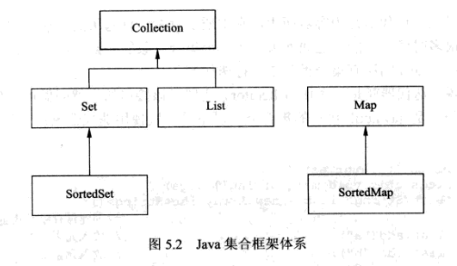
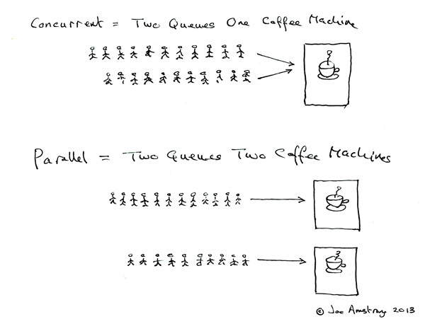

<!DOCTYPE html>


<html lang="en">


<head>
  <meta charset="utf-8" />
    
  <meta name="viewport" content="width=device-width, initial-scale=1, maximum-scale=1" />
  <title>
    Java复习笔记 |  
  </title>
  <meta name="generator" content="hexo-theme-ayer">
  
  <link rel="shortcut icon" href="/favicon.ico" />
  
  <link rel="stylesheet" href="/dist/main.css">
  <link rel="stylesheet" href="https://cdn.jsdelivr.net/gh/Shen-Yu/cdn/css/remixicon.min.css">
  <link rel="stylesheet" href="/css/custom.css">
  
  <script src="https://cdn.jsdelivr.net/npm/pace-js@1.0.2/pace.min.js"></script>
  
  

  

  <link rel="stylesheet" href="https://cdn.jsdelivr.net/gh/highlightjs/cdn-release@latest/build/styles/vs2015.min.css"><!- highlight.js ->
  <script src="https://cdn.jsdelivr.net/gh/highlightjs/cdn-release@latest/build/highlight.min.js"></script>
  <script>
    hljs.initHighlightingOnLoad();
  </script>
</head>

</html>


<body>
  <div id="app">
    
      
    <main class="content on">
      <section class="outer">
  <article
  id="post-Java复习笔记"
  class="article article-type-post"
  itemscope
  itemprop="blogPost"
  data-scroll-reveal
>
  <div class="article-inner">
    
    <header class="article-header">
       
<h1 class="article-title sea-center" style="border-left:0" itemprop="name">
  Java复习笔记
</h1>
 

    </header>
     
    <div class="article-meta">
      <a href="/2017/10/10/Java%E5%A4%8D%E4%B9%A0%E7%AC%94%E8%AE%B0/" class="article-date">
  <time datetime="2017-10-10T01:54:47.000Z" itemprop="datePublished">2017-10-10</time>
</a> 
  <div class="article-category">
    <a class="article-category-link" href="/categories/%E5%90%8E%E7%AB%AF/">后端</a>
  </div>

  
<div class="word_count">
    <span class="post-time">
        <span class="post-meta-item-icon">
            <i class="ri-quill-pen-line"></i>
            <span class="post-meta-item-text"> Word count:</span>
            <span class="post-count">8k</span>
        </span>
    </span>

    <span class="post-time">
        &nbsp; | &nbsp;
        <span class="post-meta-item-icon">
            <i class="ri-book-open-line"></i>
            <span class="post-meta-item-text"> Reading time≈</span>
            <span class="post-count">33 min</span>
        </span>
    </span>
</div>
 
    </div>
      
    <div class="tocbot"></div>


  
    <div class="article-entry" itemprop="articleBody">
       
  <h2 id="索引"><a href="#索引" class="headerlink" title="索引"></a>索引</h2><ol>
<li><a href="#Java_env"> Java运行环境 </a></li>
<li><a href="#Java_basic"> Java语言 </a></li>
<li><a href="#Java_grammer"> Java语法 </a></li>
<li><a href="#Java_array"> Java数组 </a></li>
<li><a href="#Java_collections"> 集合框架 </a></li>
<li><a href="#Java_io"> Java I/O 输入/输出流 </a></li>
<li><a href="#Java_reflect"> 反射 </a></li>
<li><a href="#Java_network"> Java网络编程 </a></li>
<li><a href="#Java_web"> Java Web 开发相关技术 </a></li>
<li><a href="#algorithm_problem"> 算法题 </a></li>
</ol>
<h2 id="Java运行环境"><a href="#Java运行环境" class="headerlink" title=" Java运行环境 "></a><a id="Java_env"> Java运行环境 </a></h2><h3 id="JDK和JRE的作用"><a href="#JDK和JRE的作用" class="headerlink" title="JDK和JRE的作用"></a>JDK和JRE的作用</h3><p>JRE(Java Runtime Environment)是Java程序的运行环境。包含JVM在%JRE安装目录%/bin/client/jvm.dll，所有的Java类库的class文件，在lib目录下打包成jar包。</br><br>JKD(Java Development Kit)是Java开发工具包。在%JDK安装目录%/bin/client/jvm.dll与在%JKD安装目录%/bin/server/jvm.dll下含有两个JVM虚拟机。同时只有JDK下才有javac。</br></p>
<h3 id="配置JDK环境"><a href="#配置JDK环境" class="headerlink" title="配置JDK环境"></a>配置JDK环境</h3><ol>
<li>我的电脑-&gt;属性-&gt;系统属性-&gt;高级-&gt;环境变量-&gt;系统环境变量，新建JAVA_HOME环境变量，值为 %jdk安装目录%，例：C:\Program Files\Java\jkd1.6.1_13</li>
<li>配置path环境变量：在path后加上;%JAVA_HOME%\bin</li>
<li>编译java代码：</li>
</ol>
<pre><code class="java">public class HelloWorld {
    public static void main(String[] args){
        System.out.println(&quot;Hello world!&quot;);
    }
}</code></pre>
<p>保存为HelloWorld.java，命令行进入当前目录使用命令：javac HelloWorld.java编译上传HelloWorld.class文件(class文件是字节码文件，字节码需要在JVM虚拟机里面运行)</p>
<ol start="4">
<li>使用命令java HelloWorld 运行</li>
</ol>
<p>如果类指定了包名则需用命令javac -d HelloWorld.java来进行编译</br></p>
<h3 id="class文件"><a href="#class文件" class="headerlink" title=".class文件"></a>.class文件</h3><p>.class文件是字节码文件，字节码需要在JVM虚拟机里面运行。对一个.java文件进行编译可以产生一个同名的.class文件。若对一个含有内部类的.java文件进行编译会产生 外部类名$内部类名.class的文件。</br></p>
<h3 id="类的加载机制"><a href="#类的加载机制" class="headerlink" title="类的加载机制"></a>类的加载机制</h3><p>Java提供两种类的装载方式：</p>
<ol>
<li>预先装载</li>
<li>按需装载(大部分类延迟到使用时才动态加载被称为Java的运行时动态装载机制)</li>
</ol>
<p>Java的运行时动态装载机制：使得Java可以在动态运行时装载软件部件，修改代码无需全盘编译，为软件系统的开发提供了极大的灵活性。</br></p>
<ol>
<li>预先装载</li>
</ol>
<p>当启动一个程序时：Java首先在JDK目录下找到并载入jvm.dll-&gt;启动虚拟机-&gt;虚拟机进行初始化操作(设置操作系统参数等)-&gt;创建Bootstrap Loader对象(启动类装载器，由C++编写)-&gt;Bootstrap Loader一次性加载JVM的所有基础类</br></p>
<p>Bootstrap Loader还会装载定义在sun.misc命名空间下的Launcher类，Launcher类拥有两个内部类：ExtClassLoader, AppClassLoader. 其继承关系如下：<br>Bootstrap Loader&lt;-ExtClassLoader&lt;-AppClassLoader(拥有main()函数的入口类)</p>
<ol start="2">
<li>按需装载</li>
</ol>
<p>装载条件：</br><br>1)静态方法</br><br>2)静态属性</br><br>3)构造方法</br><br>除外：</br><br>1)当访问静态常量属性时，JVM加载类的过程中不会进行类的初始化工作，只会进行到解析阶段</br><br>2)构造方法没有被显示的声明为静态方法，但它仍作为内地 静态成员特例</br></p>
<p>按需装载流程：</br><br>当需要使用一个类时JVM会检查这个类的Class对象是否已经加载，若未加载则开始装载：</p>
<ol>
<li>加载：查找并导入类的二进制字节码文件，根据这些字节码文件创建一个Class对象</li>
<li>链接：分为校验、准备、解析</li>
<li>校验：检查导入的二进制字节码的完整性、正确性、安全性</li>
<li>准备：为静态域分配存储空间</li>
<li>解析：将符号引用转折为直接引用</li>
<li>初始化：初始化静态变量并执行静态域代码</li>
</ol>
<p>类加载器：JVM使用类加载器来加载类，Java加载器在Java核心类库和CLASSPATH环境下面的所有类中查找类，若找不到则会抛出java.lang.ClassNotFoundException异常</br></p>
<p>从J2SE1.2开始：JVM使用了3中加载器：bootstrap、extension、system类加载器，依次为父子关系。</br></p>
<h3 id="环境变量CLASSPATH的作用"><a href="#环境变量CLASSPATH的作用" class="headerlink" title="环境变量CLASSPATH的作用"></a>环境变量CLASSPATH的作用</h3><p>环境变量CLASSPATH是在编译Java源码和运行程序时使用的，用于为Java程序指定所依赖的接口、类等搜索路径。</br></p>
<pre><code>.;c:\jar\log4j.jar;d:\work\java</code></pre><h3 id="如何为Java程序动态的指定类搜索路径"><a href="#如何为Java程序动态的指定类搜索路径" class="headerlink" title="如何为Java程序动态的指定类搜索路径"></a>如何为Java程序动态的指定类搜索路径</h3><p>使用-cp选项，此时JVM会把指定的jar文件作为CLASSPATH的一部分</br></p>
<pre><code>javac -cp D:\work\java\log4j.jar HelloWorld.java</code></pre><h3 id="如何使用cmd把Java程序打包成jar文件"><a href="#如何使用cmd把Java程序打包成jar文件" class="headerlink" title="如何使用cmd把Java程序打包成jar文件"></a>如何使用cmd把Java程序打包成jar文件</h3><p>jar包一般包含class文件、配置文件和清单文件manifest.mf</br></p>
<p>格式如下：</br></p>
<pre><code>jar {c t x u f}[v m e 0 M i][-C 目录]文件名
{c t x u f}四个参数必须选其一
[v m e 0 m i]为可选参数
-c 创建一个jar包
-t 显示jar包中内容列表
-x 解压jar包
-u 添加文件到jar包
-f 指定jar包的文件名

-v 生成详细报告并输出到标准设备
-m 指定manifest.mf文件
-0 产生jar包时不对内容进行压缩
-M 不产生所有文件的清单文件manifest.mf
-i 为指定的jar文件创建索引文件

-C 表示转到相应的目录下指定jar命令</code></pre><pre><code>生成hello.jar包
jar cf hello.jar HelloWorld.class
显示打包过程
jar vcf hello.jar HelloWorld.class</code></pre><h3 id="Java-Web项目生成-Build-、部署-Deploy-、配置-Configuration"><a href="#Java-Web项目生成-Build-、部署-Deploy-、配置-Configuration" class="headerlink" title="Java Web项目生成(Build)、部署(Deploy)、配置(Configuration)"></a>Java Web项目生成(Build)、部署(Deploy)、配置(Configuration)</h3><p>目录结构：</br></p>
<pre><code>javaweb
    |- META-INF
    |- resource
    |- WEB-INF
        |- classes
        |- lib</code></pre><p>web.xml是整个Web应用程序的配置文件，通过它来定义Servlet、过滤器、监听器等，Web容器通过该文件的配置来控制整个Web应用程序的行为方式。须放在WEB-INF目录下</br></p>
<p>Servlet是服务器端处理HTTP请求的基本组成单元。JSP、过滤器都由其实现。Servlet存活在Web容器中，由Web容器来控制其生命周期。</br><br>JSP的脚本语言是Java，其本质是Servlet。</br></p>
<p>打包出来的文件为.war后缀，Java Web容器是符合Java EE规范的，所以每个Java Web应用程序都可以部署到任何平台的任何Java EE容器中。</br></p>
<hr>
<h2 id="Java语言"><a href="#Java语言" class="headerlink" title=" Java语言 "></a><a id="Java_basic"> Java语言 </a></h2><h3 id="Java与C-程序的区别"><a href="#Java与C-程序的区别" class="headerlink" title="Java与C++程序的区别"></a>Java与C++程序的区别</h3><p>C、C++：由编译器把源码直接编译成计算机可识别的机器码(exe、dll等)，再直接运行。</br><br>Java：由javac命令把源文件编译成class文件，在Java程序启动时先启动Java虚拟机再由虚拟机去加载class文件。</br></p>
<h3 id="简述JCM及其工作原理"><a href="#简述JCM及其工作原理" class="headerlink" title="简述JCM及其工作原理"></a>简述JCM及其工作原理</h3><p>JVM是一种用软件模拟出来的计算机，它用于执行Java程序，有一套非常严格的技术规范，是Java程序实现跨平台特性的基础。Java虚拟机有虚拟出来的计算机硬件如：处理器、寄存器、堆栈等，还具有与之配套的指令系统。它运行Java程序就行普通计算机运行C、C++程序一样。</br></p>
<h3 id="Java程序为什么无需delete语句进行内存回收-JVM的垃圾回收机制"><a href="#Java程序为什么无需delete语句进行内存回收-JVM的垃圾回收机制" class="headerlink" title="Java程序为什么无需delete语句进行内存回收(JVM的垃圾回收机制)"></a>Java程序为什么无需delete语句进行内存回收(JVM的垃圾回收机制)</h3><p>JVM把程序创建的对象存放在堆空间中</br></p>
<p>堆(Heap)：是一个运行时的数据存储区。分配和释放由程序中显示分配，没有垃圾自动回收机制，且须由程序代码显示释放这些实体。类似于C中的malloc()和free()。JVM会把程序创建的对象放在堆中，在Java中则由JVM自动释放(一般是垃圾回收器检测出一个对象不再被引用就就行回收)。</br><br>栈(Stack)：一般存放非static的自动变量、函数参数、表达式的临时结果和函数返回值。分配和释放均由系统自动完成。</br></p>
<hr>
<h2 id="Java语法"><a href="#Java语法" class="headerlink" title=" Java语法 "></a><a id="Java_grammer"> Java语法 </a></h2><h3 id="变量及其作用域"><a href="#变量及其作用域" class="headerlink" title="变量及其作用域"></a>变量及其作用域</h3><p>全局变量：可以被所有函数在任何地址使用的变量</br><br>局部变量：在某一特定的代码范围才能看见的变量</br></p>
<p>根据生存周期来分：</br></p>
<ol>
<li>静态变量：类中由static修饰的变量，当类加载时就生成并初始化</br></li>
<li>成员变量：类中没有使用static修饰的变量，当对象加载时就生成并初始化，随着垃圾回收器回收而消失</br></li>
<li>局部变量：定义在方法中的变量或方法的参数或定义在代码块中(用大括号包括的)的变量</br></li>
</ol>
<h3 id="Java变量数据类型"><a href="#Java变量数据类型" class="headerlink" title="Java变量数据类型"></a>Java变量数据类型</h3><p>分为：</br></p>
<p>基本数据类型和引用数据类型</br></p>
<h3 id="Java包含哪些基本数据类型及其包装类"><a href="#Java包含哪些基本数据类型及其包装类" class="headerlink" title="Java包含哪些基本数据类型及其包装类"></a>Java包含哪些基本数据类型及其包装类</h3><p>基本数据类型：byte, short, int, long, float, double, boolean, char</br><br>包装类：Byte, Short, Integer, Long, Float, Double, Boolean, Character</br></p>
<p>int取值范围：int长度为4字节，共4*8=32位，第一位为符号位，最大值为2^31-1，最小值为-2^31</br></p>
<pre><code class="java">int otc = 0123; // 八进制
int hex = 0x123; // 十六进制</code></pre>
<p>long取值范围：长度为8字节，共8*8=64位，[-2^63, 2^63-1]</br></p>
<p>float取值范围：长度为4字节，共4*8=32位，[3.4E+10^-38, 3.4E+10^38]</br></p>
<p>double取值范围：长度为8字节，共8*8=64位，[1.7E+10^-308, 1.7E+10^308]</br></p>
<p>类型转换：分为显示转换和隐式转换</br></p>
<p>boolean存于栈空间，Boolean对象存放在堆空间中</br></p>
<p>char采用Unicode编码，用2字节表示一个字符，char长度为2字节，16位，[0, 2^16-1]</br></p>
<p>JVM启动时会实例化9个对象池，分别用来存储8种基本类型和String对象：对象池的作用是为了避免频繁的创建和销毁对象影响系统性能</br></p>
<p>StringBuffer线程安全，StringBuilder线程不安全。</br></p>
<p>使用指定的字符集创建String对象：String str = new String(“中午”.getBytes(), “GBK”)，可用”GBK”, “UTF-8”, “ISO-8859-1”</br></p>
<h3 id="装箱与拆箱"><a href="#装箱与拆箱" class="headerlink" title="装箱与拆箱"></a>装箱与拆箱</h3><p>Java5.0提供的功能，用于打包基本数据类型，同时隐藏一些细节。自动装箱与拆箱是在编译阶段进行的。</br></p>
<h3 id="转义字符"><a href="#转义字符" class="headerlink" title="转义字符"></a>转义字符</h3><pre><code>\a:响铃
\b:退格BS
\f:换页FF
\n:换行LF
\r:回车CR
\t:水平制表HT
\v:垂直制表VT
\\:反斜杠
\?:问号字符
\&#39;:单引号字符
\&quot;:双引号字符
\0:空字符NULL
\ddd:任意字符 三位八进制
\xhh:任意字符 二位十六进制</code></pre><h3 id="Java的引用与C-的指针的区别"><a href="#Java的引用与C-的指针的区别" class="headerlink" title="Java的引用与C++的指针的区别"></a>Java的引用与C++的指针的区别</h3><p>相同：都是指向一块内存地址的，通过引用指针来完成对内存数据的操作。</br><br>区别：</br></p>
<ol>
<li>类型：引用的值为地址的数据元素，Java封装了的地址，可以转成字符查看，不必关心长度。C++指针是一个装地址的变量。</br></li>
<li>所占内存：引用声明没有实体，不占空间，C++指针用到才会赋值</br></li>
<li>初始值：java初始值为null，C++为原内存里所保存的值</br></li>
<li>计算：引用不可计算，C++相当于int可计算</br></li>
<li>控制：引用不可控制，C++可以使用计算来控制指针指向</br></li>
<li>内存泄漏：java不会，C++容易产生内存泄漏</br></li>
</ol>
<h3 id="Java中的main-方法"><a href="#Java中的main-方法" class="headerlink" title="Java中的main()方法"></a>Java中的main()方法</h3><pre><code class="java">public static void main(String[] args){

}</code></pre>
<p>作为程序的入口函数，可以通过args接受外部参数。</br></p>
<h3 id="equal与"><a href="#equal与" class="headerlink" title="equal与=="></a>equal与==</h3><p>==为直接比较值，若为基本数据类型则比较是否相同，若为引用则比较引用是否指向同一个对象。</br></p>
<p>equal则是调用java.lang.Object里的equal()方法或对象里面重写的equal方法来比较</br></p>
<h3 id="Java中的三元运算符"><a href="#Java中的三元运算符" class="headerlink" title="Java中的三元运算符"></a>Java中的三元运算符</h3><pre><code class="java">tmp = a &gt; b ? &quot;a&gt;b&quot; : &quot;a&lt;b&quot;;</code></pre>
<h3 id="注释"><a href="#注释" class="headerlink" title="注释"></a>注释</h3><pre><code class="java">// 行注释

/*
块注释
*/

/**
*文档注释
*/
public int test(String arg0){

}</code></pre>
<h3 id="静态成员的特点"><a href="#静态成员的特点" class="headerlink" title="静态成员的特点"></a>静态成员的特点</h3><p>在类中通过static关键字修饰，包括：静态成员变量、静态方法、静态代码块</br></p>
<ol>
<li>在类加载的时候就进行创建、初始化或执行代码</li>
<li>一个类只有一个</li>
<li>类的所有实例都可以访问</li>
</ol>
<h3 id="子类构造方法调用父类的构造方法"><a href="#子类构造方法调用父类的构造方法" class="headerlink" title="子类构造方法调用父类的构造方法"></a>子类构造方法调用父类的构造方法</h3><p>使用super()方法，且super()方法必须放在子类构造方法的第一行，若super()无参数则可省略</br></p>
<h3 id="接口和抽象类的区别"><a href="#接口和抽象类的区别" class="headerlink" title="接口和抽象类的区别"></a>接口和抽象类的区别</h3><p>抽象类是功能不全的类，里面可以有非抽象方法</br><br>接口是抽象方法声明和静态不能被修改数据的集合</br><br>两者都不能被实例化</br><br>一个类一次只能继承一个抽象类但可以实现多个接口</p>
<h3 id="内部类"><a href="#内部类" class="headerlink" title="内部类"></a>内部类</h3><pre><code class="java">package abc;
class A{
    class B{

    }
}</code></pre>
<p>B类的全类名是abc.A.B，且B会依赖于A。</br></p>
<p>下面分类讨论：</br></p>
<p>根据定义结构分类：</br></p>
<ol>
<li>成员式：定义的方法与成员变量相似</li>
<li>局部式：定义在方法体重</li>
</ol>
<p>成员内部类：</br></p>
<ol>
<li>静态内部类：使用static关键字修饰的内部类，当加载外部类的时候也会加载静态内部类。无法访问外部类的非静态成员。全类名：abc.A.B，class文件名：A$B.class</li>
</ol>
<pre><code class="java">package abc;
class A{
    static class B{

    }
}</code></pre>
<ol start="2">
<li>成员内部类：需要等外部类创建对象以后才会被加载到JVM中，属于外部类的某个实例，可访问外部类的静态与非静态成员。</li>
</ol>
<pre><code class="java">package abc;
class A{
    class B{

    }
}</code></pre>
<p>创建成员内部类语法：</br></p>
<pre><code class="java">public static void main(String[] args){
    A a = new A();
    A.B b = a.new B();
}</code></pre>
<p>局部式内部类：</br></p>
<ol>
<li>普通局部内部类：位于方法中</li>
<li>匿名内部类：没有类名，匿名内部类的class文件命名方法按照匿名内部类的排列顺序来进行：Outter$1.class</li>
</ol>
<h3 id="可见性private-protected-public-default"><a href="#可见性private-protected-public-default" class="headerlink" title="可见性private, protected, public, default"></a>可见性private, protected, public, default</h3><p>public:可被所有其它类访问</br><br>private:自身所在类内可见</br><br>protected:自身，子类及同一个包中类可访问</br><br>default:自身，同一个包中类可访问</br></p>
<h2 id="Java数组"><a href="#Java数组" class="headerlink" title=" Java数组 "></a><a id="Java_array"> Java数组 </a></h2><h3 id="Java数组的本质"><a href="#Java数组的本质" class="headerlink" title="Java数组的本质"></a>Java数组的本质</h3><p>Java数组的本质是一个特殊的类，该类好保存了数据类型的信息。该类通过成员变量的形式保存数据，并通过[]符号来访问数据。基本数据类型的数组保存的是值(初始化为0)，而应用类型的数组保存的是对象的引用(初始化为null)。</br></p>
<h3 id="拷贝数组的数据"><a href="#拷贝数组的数据" class="headerlink" title="拷贝数组的数据"></a>拷贝数组的数据</h3><p>通过for遍历来赋值只是复制了对象的引用，若需要复制对象则可用：</br></p>
<pre><code class="java">int[] arr = new int[][1,2,3];
int[] arr2 = new int[3];
System.arraycopy(arr, 0, arr, 0, arr.length);</code></pre>
<p>–</p>
<h2 id="集合框架"><a href="#集合框架" class="headerlink" title=" 集合框架 "></a><a id="Java_collections"> 集合框架 </a></h2><p></br></p>
<p>列表List：有序，允许重复</br><br>集合Set：无序，不允许重复</br><br>SortedSet：有序的Set</br><br>映射Map：无序，不允许重复，键值对</br><br>SortedMap：有序的Map</br></p>
<h3 id="迭代器"><a href="#迭代器" class="headerlink" title="迭代器"></a>迭代器</h3><p>迭代器(Iterator)模式，又叫游标(Cursor)模式。提供一种方法来访问一个容器对象中的各个元素。</br></p>
<h3 id="比较器"><a href="#比较器" class="headerlink" title="比较器"></a>比较器</h3><p>用于比较元素，需要实现Comparable或Comparator接口。</br></p>
<ol>
<li>Comparable接口：进行比较类需要实现的接口，仅包含一个compareTo()方法，返回值大于0时表示本对象&lt;参数对象</li>
</ol>
<pre><code class="java">public class User implements Comparable{
    public int age;
    public int compareTo(Object o){
        return this.age-(User o).age;
    }
}</code></pre>
<ol start="2">
<li>Comparator接口：实现该接口的类被称为比较器，包含compare()方法。</br></li>
</ol>
<pre><code class="java">public class User{
    public int age;

    public User(int age){
        this.age = age;
    }

    public static void main(String[] args){
        User u1 = new User(16);
        User u2 = new User(18);
        Comparator comp = new UserComparator();
        int result = comp.compare(u1, u2);
        System.out.println(result);
    }
}

public class UserComparator implements Comparator{
    public int compare(Object arg0, Object arg1){
        User u1 = (User) arg0;
        User u2 = (User) arg1;
        return u1.age - u2.age;
    }
}
</code></pre>
<h3 id="Vector-与-ArrayList-的区别"><a href="#Vector-与-ArrayList-的区别" class="headerlink" title="Vector 与 ArrayList 的区别"></a>Vector 与 ArrayList 的区别</h3><p>Vector是线程安全的，它操作元素的方法都是同步方法。ArrayList不是，但效率更高。</br></p>
<h3 id="HashMap-与-HashTable-的区别"><a href="#HashMap-与-HashTable-的区别" class="headerlink" title="HashMap 与 HashTable 的区别"></a>HashMap 与 HashTable 的区别</h3><p>HashTable的方法是同步的，HashMap不同步</br><br>HashTable不允许null，HashMap允许null</br><br>HashTable使用Enumeration遍历，HashMap使用Iterator遍历</br><br>HashTable直接使用对象的hashCode，HashMap会重新计算</br></p>
<h3 id="集合使用泛型"><a href="#集合使用泛型" class="headerlink" title="集合使用泛型"></a>集合使用泛型</h3><p>可以明确集合里存储的元素的类型，避免了手动类型转换的过程</br></p>
<h3 id="集合元素排序"><a href="#集合元素排序" class="headerlink" title="集合元素排序"></a>集合元素排序</h3><p>使用java.util.Collections类中的sort()方法对List元素进行排序</br><br>如果类中的元素全部实现了Comparable接口则可通过Collections.sort()排序</br></p>
<pre><code class="java">//REVIEW:test this code
public class User implements Comparable&lt;User&gt;{
    public int age;

    public User(int age){
        this.age = age;
    }

    public int compareTo(Object o){
        return this.age-(User o).age;
    }
}

public class Test{
    public static void main(String[] args){
        List&lt;User&gt; list = new ArrayList&lt;User&gt;();
        list.add(new User(16));
        list.add(new User(18));
        list.add(new User(22));
        // 默认排序
        Collections.sort(list);
        // 降序排序
        // 若没有实现Comparable接口，也可以提供比较器
        Comparator comp = Collections.reverseOrder();
        Collections.sort(list, comp);

    }
}</code></pre>
<p>若没有实现Comparable接口，也可以提供比较器来进行排序</br></p>
<h3 id="什么集合可以使用-foreach"><a href="#什么集合可以使用-foreach" class="headerlink" title="什么集合可以使用 foreach"></a>什么集合可以使用 foreach</h3><p>foreach运行步骤如下：</br></p>
<ol>
<li>调用指定集合对象的Iterator()方法，得到迭代器</li>
<li>使用迭代器的hasNext()方法判断有无下一个元素进行循环</li>
<li>每次循环都用next()方法得到元素</li>
</ol>
<p>数组或实现了Iterable接口的类实例，Jav集合框架中的集合大多符合第二条</br></p>
<hr>
<h2 id="Java-I-O-输入-输出流"><a href="#Java-I-O-输入-输出流" class="headerlink" title=" Java I/O 输入/输出流 "></a><a id="Java_io"> Java I/O 输入/输出流 </a></h2><h3 id="复制文件程序"><a href="#复制文件程序" class="headerlink" title="复制文件程序"></a>复制文件程序</h3><pre><code class="java">import java.io.FileInputStream;
import java.io.FileOutputStream;
import java.io.IOException;

public class FileCopy{
    public static void main(String[] args){
        // 输入文件流
        FileInputStream fin = new FileInputStream(&quot;d:/test/a.txt&quot;);
        // 输出文件流
        FileOutputStream fout = new FileOutputStream(&quot;d:/test/b.txt&quot;);
        byte[] buff = new byte[256]; // 缓冲区
        int len = 0; // 每次读到的数据长度
        while((len = fin.read(buff)) &gt; 0){
            fout.write(buff, 0, len);
        }
        fin.close();
        fout.close();
    }
}</code></pre>
<p>如果不关闭流，会造成资源的浪费，还可能会导致文件锁住，其他程序无法操作文件。</br></p>
<h3 id="字节流"><a href="#字节流" class="headerlink" title="字节流"></a>字节流</h3><p>字节流处理的是最基本的单位byte，它可以处理任何形式的数据，主要操作byte数组。Java中可以使用java.io.FileInputStream和java.io.FileOutputStream来进行字节流的处理。</br></p>
<p>你也可以使用包装过的具有特定功能的字节流，基本使用思路如下：</br></p>
<ol>
<li>获取输入或输出的流对象，从File获得或网络等</li>
<li>根据特定的字符格式创建InputStreamReader或InputStreamWriter</li>
<li>使用read()或readLine()方法读取数据，write()或print()</li>
<li>关闭流</li>
</ol>
<h3 id="序列化"><a href="#序列化" class="headerlink" title="序列化"></a>序列化</h3><p>把对象内存中的数据按照规则变成一系列的字节数据并写入到流中。须Serializable，必要时还需提供serialVersionUID</br></p>
<h2 id="多线程"><a href="#多线程" class="headerlink" title="多线程"></a>多线程</h2><h3 id="线程-Thread-与进程-Process-的区别"><a href="#线程-Thread-与进程-Process-的区别" class="headerlink" title="线程(Thread)与进程(Process)的区别"></a>线程(Thread)与进程(Process)的区别</h3><p>进程包含线程，每个应用程序的执行都在操作系统内核中登记一个进程标志，操作系统根据分配的标志对应用程序的执行进行调度和系统资源分配。进程是占用系统资源的基本单位。</br><br>进程在执行过程中拥有独立的内存单元，而多个线程共享内存。</br><br>进程拥有固定的入口、执行顺序、出口，而线程会被应用程序控制。</br></p>
<h3 id="并发-Concurrent-与并行-Parallel-的区别"><a href="#并发-Concurrent-与并行-Parallel-的区别" class="headerlink" title="并发(Concurrent)与并行(Parallel)的区别"></a>并发(Concurrent)与并行(Parallel)的区别</h3>

<p>并发：交替使用一台咖啡机；并行同时使用两台咖啡机。</br></p>
<p>并行是指两个或者多个事件在同一时刻发生；而并发是指两个或多个事件在同一时间间隔内发生。并行是并发的子集。</br></p>
<p>在操作系统中，并发是指一个时间段中有几个程序都处于已启动运行到运行完毕之间，且这几个程序都是在同一个处理机上运行，但任一个时刻点上只有一个程序在处理机上运行。</br></p>
<h3 id="让一个类成为线程类"><a href="#让一个类成为线程类" class="headerlink" title="让一个类成为线程类"></a>让一个类成为线程类</h3><ol>
<li>实现Runnable接口</li>
<li>继承Thread类</li>
</ol>
<p>继承Thread类之后就不能继承其它类了，实现Runnable接口则可以。</br><br>继承Thread类更方便。</br><br>实现Runnable接口的线程类更方便访问同一个变量，而Thread则需要使用内部类。</br></p>
<p>继承自Thread类可以通过new创建对象再调用start()方法。</br><br>实现Runnable接口的线程类需要将其对象作为Thread构造方法的参数，然后调用Thread对象的start()方法</br></p>
<h3 id="使用sychronized让线程同步"><a href="#使用sychronized让线程同步" class="headerlink" title="使用sychronized让线程同步"></a>使用sychronized让线程同步</h3><p>每个对象都可以有一个线程锁，sychronized可以用任何一个对象的线程锁来锁住一段代码，任何想要进入该段代码的线程必须在解锁以后才能继续执行，否则进入等待状态。只有占用锁资源的线程执行完毕后，锁资源才会被释放。</br></p>
<p>java会为每个object对象分配一个monitor，当某个对象的同步方法（synchronized methods ）被多个线程调用时，该对象的monitor将负责处理这些访问的并发独占要求。</br><br>当一个线程调用一个对象的同步方法时，JVM会检查该对象的monitor。如果monitor没有被占用，那么这个线程就得到了monitor的占有 权，可以继续执行该对象的同步方法；如果monitor被其他线程所占用，那么该线程将被挂起，直到monitor被释放。</br><br>当线程退出同步方法调用时，该线程会释放monitor，这将允许其他等待的线程获得monitor以使对同步方法的调用执行下去。</br></p>
<h3 id="编写一个生产者消费者模型的多线程例子"><a href="#编写一个生产者消费者模型的多线程例子" class="headerlink" title="编写一个生产者消费者模型的多线程例子"></a>编写一个生产者消费者模型的多线程例子</h3><p>每个生产者在添加货物之前检查仓库是否已满，若已满则等待并通知消费者进行消费，直到消费者消费了至少一个货物以后再继续添加；消费者在消费一个货物之前检查仓库是否为空，若为空着等待并通知生产者进行生产，直到生产者添加了至少一个货物后，再进行消费。</br></p>
<p>sleep()函数是Thread类的静态函数，不涉及到线程间同步概念，仅仅为了让一个线程自身获得一段沉睡时间。sleep可以在任何地方使用。</br><br>wait函数是object类的函数，要解决的问题是线程间的同步，该过程包含了同步锁的获取和释放，调用wait方法将会将调用者的线程挂起，直到其他线程调用同一个对象的notify方法才会重新激活调用者。</br></p>
<pre><code class="java">package review.thread;

public class Store {
    /**
     * 仓库的最大容量
     */
    private final int MAX_SIZE;
    /**
     * 当前的货物数量
     */
    private int count;
    /**
     * 初始化最大容量的构造方法
     * @param n 仓库的最大容量
     */
    public Store(int n){
        MAX_SIZE = n;
        count=0;
    }

    /**
     * 向仓库添加货物
     */
    public synchronized void add(){
        while(count &gt;= MAX_SIZE){
            System.out.println(&quot;仓库已满&quot;);
            try{
                this.wait(); // 进入等待池
            }catch(InterruptedException e){
                e.printStackTrace();
            }
        }
        count++; // 增加库存
        System.out.println(Thread.currentThread().toString() + &quot; add &quot; + count);
        this.notifyAll(); // 通知所有消费者线程来拿，同时唤醒所有挂起的生产者
    }

    public synchronized void remove(){
        while(count &lt;= 0){
            System.out.print(&quot;empty&quot;);
            try {
                this.wait();
            } catch (InterruptedException e) {
                // TODO Auto-generated catch block
                e.printStackTrace();
            }
        }
        System.out.println(Thread.currentThread().toString() + &quot; remove &quot; + count);
        count--;
        this.notify(); // 通知生产者添加
    }

    public static void main(String[] args){
        Store store = new Store(5);

        Thread pro1 = new Proceducer(store);
        Thread pro2 = new Proceducer(store);
        Thread con1 = new Consumer(store);
        Thread con2 = new Consumer(store);
        pro1.setName(&quot;producer1&quot;);
        pro2.setName(&quot;producer2&quot;);
        con1.setName(&quot;consumer1&quot;);
        con2.setName(&quot;consumer2&quot;);

        pro1.start();
        pro2.start();
        con1.start();
        con2.start();
    }
}

package review.thread;

public class Proceducer extends Thread{
    private Store store;
    public Proceducer(Store store){
        this.store = store;
    }
    public void run(){
        while(true){
            this.store.add();
            try {
                Thread.sleep(1000);
            } catch (InterruptedException e) {
                // TODO Auto-generated catch block
                e.printStackTrace();
            }
        }
    }
}

package review.thread;

public class Consumer extends Thread{
    private Store store;
    public Consumer(Store store){
        this.store = store;
    }
    public void run(){
        while(true){
            this.store.remove();
            try {
                Thread.sleep(1500);
            } catch (InterruptedException e) {
                // TODO Auto-generated catch block
                e.printStackTrace();
            }
        }
    }
}
</code></pre>
<h3 id="如何使用Java线程池"><a href="#如何使用Java线程池" class="headerlink" title="如何使用Java线程池"></a>如何使用Java线程池</h3><p>线程池属于对象池，其目的在于最大限度的复用对象。还可以使线程代码与业务代码分离。</br></p>
<pre><code class="java">java.util.concurrent.ThreadPoolExecutor(
    int corePoolSize, // 最大核心线程数
    int maximumPoolSize, // 允许最大线程数
    long keepAliveTime,
    TimeUnit unit,
    BlokingQueue&lt;Runnable&gt; workQueue, // 缓冲队列
    RejectedExecutionHandler handler
);</code></pre>
<p>一个Runnable类型的对象通过execute(Runnable)方法添加到线程池。</br><br>当一个任务通过execute(Runnable)方法添加到线程池时：</br></p>
<ol>
<li>如果此时线程池中线程数&lt;corePoolSize，即使线程池中的线程都处于空闲状态也要添加新线程来处理任务</li>
<li>如果此时线程池中线程数=corePoolSize，但缓冲队列workQueue未满，那么任务被放入缓冲队列</li>
<li>如果此时线程池中线程数&gt;corePoolSize，缓冲队列workQueue满，但线程池中线程数&lt;maximumPoolSize，创建新线程来处理任务</li>
<li>如果此时线程池中线程数&gt;corePoolSize，缓冲队列workQueue满，但线程池中线程数=maximumPoolSize，通过handler所指定的策略来处理此任务</li>
</ol>
<pre><code class="java">import java.util.concurrent.ArrayBlockingQueue;
import java.util.concurrent.ThreadPoolExecutor;
import java.util.concurrent.TimeUnit;

public class TestThreadPool {
    private static int produceTaskSleepTime = 2000;
    public static void main(String[] args){
        // 创建线程池
        ThreadPoolExecutor producerPool = new ThreadPoolExecutor(
                1, 1, 0, TimeUnit.SECONDS, 
                new ArrayBlockingQueue(3), 
                new ThreadPoolExecutor.DiscardOldestPolicy());

        int i = 1;
        while(true){
            try {
                Thread.sleep(produceTaskSleepTime);
                String task = &quot;task@&quot; + i;
                System.out.println(&quot;put &quot; + task);
                // 用execute方法启动任务
                producerPool.execute(new ThreadPoolTask(task));
                i++;
            } catch (InterruptedException e) {
                // TODO Auto-generated catch block
                e.printStackTrace();
            }
        }
    }
}

import java.io.Serializable;

public class ThreadPoolTask implements Runnable, Serializable{

    private static final long serialVersionUID = 0;

    private static int consumeTaskSleepTime = 2000;

    private String threadPoolTaskData;

    public ThreadPoolTask(String tasks){
        this.threadPoolTaskData = tasks;
    }

    public void run() {
        System.out.println(&quot;start..&quot; + threadPoolTaskData);
        try {
            Thread.sleep(consumeTaskSleepTime);
        } catch (InterruptedException e) {
            // TODO Auto-generated catch block
            e.printStackTrace();
        }
        threadPoolTaskData = null;
    }

}
</code></pre>
<hr>
<h2 id="反射"><a href="#反射" class="headerlink" title=" 反射 "></a><a id="Java_reflect"> 反射 </a></h2><h3 id="反射原理"><a href="#反射原理" class="headerlink" title="反射原理"></a>反射原理</h3><p>反射能够动态的加载一个类，动态的调用一个方法，动态的访问一个属性。JVM会为每个类创建一个java.lang.Class类的实例，通过该对象可以获取这个类的信息，然后在通过java.lang.reflect包下的API来进行操作。</br></p>
<h3 id="类型信息的存储"><a href="#类型信息的存储" class="headerlink" title="类型信息的存储"></a>类型信息的存储</h3><p>如果Java类文件存在内部类，那么编译这个文件时就会产生多个.class文件，命名规则为：外部类名$内部类名.class</p>
<p>例如：</p>
<pre><code class="java">public class Person{
    class Tool{

    }
    interface Communication{
        public void speak();
    }
}</code></pre>
<p>会产生 Perlon.class, Person$Tool.class, Person$Communitcation.class 三个文件</p>
<p>.class 文件结构</p>
<table border="1">
    <tbody>
        <tr>
            <td valign="top" style="background:rgb(79,129,189)">
                <p align="left"><span style="color:white">类型</span></p>
            </td>
            <td valign="top" style="background:rgb(79,129,189)">
                <p align="left"><span style="color:white">名称</span></p>
            </td>
            <td valign="top" style="background:rgb(79,129,189)">
                <p align="left"><span style="color:white">数量</span></p>
            </td>
            <td valign="top" style="background:rgb(79,129,189)">
                <p align="left"><span style="color:white">长度</span></p>
            </td>
            <td valign="top" style="background:rgb(79,129,189)">
                <p align="left"><span style="color:white">备注</span></p>
            </td>
        </tr>
        <tr>
            <td valign="top">
                <p align="left">u4</p>
            </td>
            <td valign="top">
                <p align="left">magic</p>
            </td>
            <td valign="top">
                <p align="left">1</p>
            </td>
            <td valign="top">
                <p align="left">4Byte</p>
            </td>
            <td valign="top">
                <p align="left">魔数：0xCAFEBABE</br>Od -x命令可以看到，保证虚拟机可以轻松分辨Java文件和非Java文件。
                </p>
            </td>
        </tr>
        <tr>
            <td valign="top">
                <p align="left">u2</p>
            </td>
            <td valign="top">
                <p align="left">minor_version</p>
            </td>
            <td valign="top">
                <p align="left">1</p>
            </td>
            <td valign="top">
                <p align="left">2Byte</p>
            </td>
            <td valign="top">
                <p align="left">主版本号，class文件格式变化而变化</p>
            </td>
        </tr>
        <tr>
            <td valign="top">
                <p align="left">u2</p>
            </td>
            <td valign="top">
                <p align="left">major_version</p>
            </td>
            <td valign="top">
                <p align="left">1</p>
            </td>
            <td valign="top">
                <p align="left">2Byte</p>
            </td>
            <td valign="top">
                <p align="left">主版本号，class文件格式变化而变化</p>
            </td>
        </tr>
        <tr>
            <td valign="top">
                <p align="left">u2</p>
            </td>
            <td valign="top">
                <p align="left">constant_pool_count</p>
            </td>
            <td valign="top">
                <p align="left">1</p>
            </td>
            <td valign="top">
                <p align="left">?</p>
            </td>
            <td valign="top">
                <p align="left">常量个数</p>
            </td>
        </tr>
        <tr>
            <td valign="top">
                <p align="left">cp_info</p>
            </td>
            <td valign="top">
                <p align="left">constant_pool</p>
            </td>
            <td valign="top">
                <p align="left">constant_pool_count-1</p>
            </td>
            <td valign="top">
                <p align="left">?</p>
            </td>
            <td valign="top">
                <p align="left">常量池：包含文件中类和接口相关常量。文字字符串、final变量值、类名和方法名的常量。通常占整个类大小的60%</p>
            </td>
        </tr>
        <tr>
            <td valign="top">
                <p align="left">u2</p>
            </td>
            <td valign="top">
                <p align="left">access_flags</p>
            </td>
            <td valign="top">
                <p align="left">1</p>
            </td>
            <td valign="top">
                <p align="left">2Byte</p>
            </td>
            <td valign="top">
                <p align="left">访问标志：定义了类或接口。</p>
            </td>
        </tr>
        <tr>
            <td valign="top">
                <p align="left">u2</p>
            </td>
            <td valign="top">
                <p align="left">this_class</p>
            </td>
            <td valign="top">
                <p align="left">1</p>
            </td>
            <td valign="top">
                <p align="left">2Byte</p>
            </td>
            <td valign="top">
                <p align="left">常量池索引，指向常量池中该类全限定名的常量池入口</p>
            </td>
        </tr>
        <tr>
            <td valign="top">
                <p align="left">u2</p>
            </td>
            <td valign="top">
                <p align="left">super_class</p>
            </td>
            <td valign="top">
                <p align="left">1</p>
            </td>
            <td valign="top">
                <p align="left">2Byte</p>
            </td>
            <td valign="top">
                <p align="left">指向父类全限定名</p>
            </td>
        </tr>
        <tr>
            <td valign="top">
                <p align="left">u2</p>
            </td>
            <td valign="top">
                <p align="left">interfaces_count</p>
            </td>
            <td valign="top">
                <p align="left">1</p>
            </td>
            <td valign="top">
                <p align="left">?</p>
            </td>
            <td valign="top">
                <p align="left">该类实现的接口数量</p>
            </td>
        </tr>
        <tr>
            <td valign="top">
                <p align="left">u2</p>
            </td>
            <td valign="top">
                <p align="left">interfaces</p>
            </td>
            <td valign="top">
                <p align="left">interfaces_count</p>
            </td>
            <td valign="top">
                <p align="left">?</p>
            </td>
            <td valign="top">
                <p align="left">由该类实现的接口的常量池引用</p>
            </td>
        </tr>
        <tr>
            <td valign="top">
                <p align="left">u2</p>
            </td>
            <td valign="top">
                <p align="left">fields_count</p>
            </td>
            <td valign="top">
                <p align="left">1</p>
            </td>
            <td valign="top">
                <p align="left">?</p>
            </td>
            <td valign="top">
                <p align="left">字段数量</p>
            </td>
        </tr>
        <tr>
            <td valign="top">
                <p align="left">field_info</p>
            </td>
            <td valign="top">
                <p align="left">fields</p>
            </td>
            <td valign="top">
                <p align="left">fields_count</p>
            </td>
            <td valign="top">
                <p align="left">?</p>
            </td>
            <td valign="top">
                <p align="left">字段信息表，描述字段的类型、描述符等</p>
            </td>
        </tr>
        <tr>
            <td valign="top">
                <p align="left">u2</p>
            </td>
            <td valign="top">
                <p align="left">methods_count</p>
            </td>
            <td valign="top">
                <p align="left">1</p>
            </td>
            <td valign="top">
                <p align="left">?</p>
            </td>
            <td valign="top">
                <p align="left">方法数量</p>
            </td>
        </tr>
        <tr>
            <td valign="top">
                <p align="left">method_info</p>
            </td>
            <td valign="top">
                <p align="left">methods</p>
            </td>
            <td valign="top">
                <p align="left">methods_count</p>
            </td>
            <td valign="top">
                <p align="left">?</p>
            </td>
            <td valign="top">
                <p align="left">方法本身，每个方法都有一个method_info表，记录了方法的方法名、字段类型、描述符等</p>
            </td>
        </tr>
        <tr>
            <td valign="top">
                <p align="left">u2</p>
            </td>
            <td valign="top">
                <p align="left">attributes_count</p>
            </td>
            <td valign="top">
                <p align="left">1</p>
            </td>
            <td valign="top">
                <p align="left">?</p>
            </td>
            <td valign="top">
                <p align="left">属性数量</p>
            </td>
        </tr>
        <tr>
            <td valign="top">
                <p align="left">attribute_info</p>
            </td>
            <td valign="top">
                <p align="left">attributes</p>
            </td>
            <td valign="top">
                <p align="left">attributes_count</p>
            </td>
            <td valign="top">
                <p align="left">?</p>
            </td>
            <td valign="top">
                <p align="left">属性本身</p>
            </td>
        </tr>
    </tbody>
</table>


<p>代理</p>
<p>静态代理</p>
<pre><code class="java">public interface Speakable{
    public void speak(String msg);
}

public class Person implements Speakable{
    @Override
    public void speak(String msg){
        System.out.println(&quot;Speak:&quot; + msg);
    }
}

public class PersonProxy implements Speakable{
    private Person person;
    public PersonProxy(Person person){
        this.person=person;
    }
    @Override
    public void speak(String msg){
        this.person.speak(msg);
        System.out.println(&quot;运行时间:&quot; + System.currentTimeMillis());
    }
}

public class Boostrap{
    public static void main(String[] args){
        Person person = new Person();
        PersonProxy proxy = new PersonProxy(person);
        proxy.speak(&quot;static proxy&quot;);
    }
}</code></pre>
<p>动态代理</p>
<pre><code class="java">// 调用处理器
public class MyProxy implements InvocationHandler{
    private Object proxied;
    public MyProxy(Object proxied){
        this.proxied=proxied;
    }

    // (代理对象由java动态生成, 被执行的委托方法, 执行委托方法所需要的参数)
    @Override
    public Object invoke(Object proxy, Method method, Object[] args) throws Throwable{
        method.invoke(this.proxied, args);
        System.out.println(&quot;运行时间:&quot; + System.currentTimeMillis());
        return null;
    }
}

public class Bootstrap{
    public static void main(String[] args){
        Person person = new Person();
        Speakable speakable = (Speakable)Proxy.newProxyInstance(
            Speakable.class.getClassLoader(),
            new Class[] {Speakable.class},
            new MyProxy(person)
        );
        speakable.speak(&quot;dynamic proxy&quot;);
    }
}</code></pre>
<hr>
<h2 id="Java网络编程"><a href="#Java网络编程" class="headerlink" title=" Java网络编程 "></a><a id="Java_network"> Java网络编程 </a></h2><h3 id="TCP-IP协议"><a href="#TCP-IP协议" class="headerlink" title="TCP/IP协议"></a>TCP/IP协议</h3><p>TCP/IP(Transmission Control Protocel/Internet Protocol)，传输控制协议/因特网互联协议，网络通讯协议。由网络层的IP协议与传输层的TCP协议组成。</br></p>
<ol>
<li>应用层(Application Layer)</li>
<li>传输层(Transport Layer)</li>
<li>网络层(Network Layer)</li>
<li>链接层(Link Layer)</li>
<li>物理层(Physical Layer)</li>
</ol>
<p>早期的时候，每家公司都有自己的电信号分组方式。逐渐地，一种叫做”以太网”（Ethernet）的协议，占据了主导地位。<br>以太网规定，一组电信号构成一个数据包，叫做”帧”（Frame）。每一帧分成两个部分：包头（Head）和数据（Data）。</p>
<p>“传输层”的功能，就是建立”端口到端口”的通信。相比之下，”网络层”的功能是建立”主机到主机”的通信。只要确定主机和端口，我们就能实现程序之间的交流。</p>
<!--TODO:P173-->


<hr>
<h2 id="Java-Web-开发相关技术"><a href="#Java-Web-开发相关技术" class="headerlink" title=" Java Web 开发相关技术 "></a><a id="Java_web"> Java Web 开发相关技术 </a></h2><pre><code>javaweb // 应用程序名字
    |- META-INF
    |- resource
    |- WEB-INF
        |- classes // 存放class文件，类加载路径
        |- lib // 第三方jar类库
        |- web.xml // 整个web应用程序的描述文件，通过它配置信息资源</code></pre><p>用户发送HTTP请求，Web容器通过http://&lt;域名或IP地址&gt;/&lt;应用的名字&gt;/&lt;资源的地址&gt;去定位资源</br></p>
<pre><code class="xml">&lt;servlet&gt;
    &lt;servlet-name&gt;&lt;/servlet-name&gt;
    &lt;servlet-class&gt;&lt;/servlet-class&gt;
&lt;/servlet&gt;

&lt;servlet-mapping&gt;
    &lt;servlet-name&gt;&lt;/servlet-name&gt;
    &lt;servlet-pattern&gt;&lt;/servlet-pattern&gt;
&lt;/servlet-mapping&gt;</code></pre>
<hr>
<h2 id="算法题"><a href="#算法题" class="headerlink" title=" 算法题 "></a><a id="algorithm_problem"> 算法题 </a></h2><h3 id="反转字符串输出"><a href="#反转字符串输出" class="headerlink" title="反转字符串输出"></a>反转字符串输出</h3><pre><code class="java">package algorithm;

public class BackString {
    public static void main(String[] args){
        String str = &quot;Hello world!&quot;;
        StringBuffer sb = new StringBuffer();
        for(int i = str.length() - 1; i &gt;= 0; i--){
            sb.append(str.substring(i,i+1));
        }
        System.out.print(sb);
    }
}
</code></pre>
<h3 id="求素数"><a href="#求素数" class="headerlink" title="求素数"></a>求素数</h3><pre><code class="java">package algorithm.prime;


public class Prime {

    private static boolean isPrime(int num){
        if(num &lt; 2){
            return false;
        }
        for(int i = 2; i &lt; num; i++){
            if(num % i == 0){
                return false;
            }
        }
        return true;
    }

    public static void main(String[] args){
        int count=0;
        for(int i = 0; i &lt; 1000000; i++){
            boolean flag = Prime.isPrime(i);
//            System.out.println(i + &quot;,&quot; + flag);
            if(flag){
                count++;
            }
        }
        System.out.println(&quot;count=&quot; + count);
    }
}
</code></pre>
<p>改进版</br></p>
<pre><code class="java">package algorithm.prime;


public class Prime {

    private static final int MaxLimit=1000000;

    private static boolean[] primeList = new boolean[MaxLimit+1];

    private static boolean isPrime(int num){
        if(num &lt; 2){
            return false;
        }
        if(num == 2){
            primeList[2] = true;
            return true;
        }
        if(num % 2 == 0){
            return false;
        }
        for(int i = 3; i*i &lt; num; i+=2){
            if(primeList[num]){
                if(num % i == 0){
                    return false;
                }
            }
        }
        for(int i = 3; i*i &lt; num; i+=2){
            if(num % i == 0){
                return false;
            }
        }
        primeList[num] = true;
        return true;
    }

    public static void main(String[] args){
        int count=0;
        for(int i = 0; i &lt; MaxLimit; i++){
            boolean flag = Prime.isPrime(i);
//            System.out.println(i + &quot;,&quot; + flag);
            if(flag){
                count++;
            }
        }
        System.out.println(&quot;count=&quot; + count);
    }
}
</code></pre>
<h3 id="打印回文数字"><a href="#打印回文数字" class="headerlink" title="打印回文数字"></a>打印回文数字</h3><pre><code class="java">package algorithm;

public class MirrorNum {
    public static boolean isMirrorNumber(int num){
        int temp = num;
        int result = 0;
        while(temp &gt; 0){
            result = result*10 + temp%10;
            temp /= 10;
        }
        return num == result;
    }

    public static void main(String[] args){
        for(int i = 10; i &lt; 1000; i++){
            if(isMirrorNumber(i)){
                System.out.println(i);
            }
        }
    }
}
</code></pre>
<h3 id="冒泡排序-BubbleSort"><a href="#冒泡排序-BubbleSort" class="headerlink" title="冒泡排序 BubbleSort"></a>冒泡排序 BubbleSort</h3><pre><code class="java">package demo;

public class BubbleSort {

    public static void bubbleSort(int[] array){
        for(int i = 1; i &lt; array.length; i++){
            for(int j = 0; j &lt; array.length-i; j++){
                if(array[j] &gt; array[j+1]){
                    int temp = array[j];
                    array[j] = array[j+1];
                    array[j+1] = temp;
                }
            }
        }
    }

    public static void main(String[] args){
        int[] array = {5,3,2,1,4};
        bubbleSort(array);
        for(int i = 0; i &lt; array.length; i++){
            System.out.print(array[i] + &quot;,&quot;);
        }
    }
}
</code></pre>
<h3 id="插入排序-InsertSort"><a href="#插入排序-InsertSort" class="headerlink" title="插入排序 InsertSort"></a>插入排序 InsertSort</h3><pre><code class="java">package demo;

public class InsertSort {

    public static void insertSort(int[] array){
        for(int i = 1; i &lt; array.length; i++){
            int temp = array[i];
            int j;
            for(j = i; j &gt; 0; j--){
                if(array[j-1] &gt; temp){
                    array[j]=array[j-1];
                }else{
                    break;
                }
            }
            array[j] = temp;
        }

    }

    public static void main(String[] args){
        int[] array = {5,3,2,1,4};
        insertSort(array);
        for(int i = 0; i &lt; array.length; i++){
            System.out.print(array[i] + &quot;,&quot;);
        }
    }
}
</code></pre>
<h3 id="快速排序-QuickSort"><a href="#快速排序-QuickSort" class="headerlink" title="快速排序 QuickSort"></a>快速排序 QuickSort</h3><pre><code class="java">package demo;

public class QuickSort {

    public static void quickSort(int[] a,int low,int high){
        int i,j;
        i=low;
        j=high;

        if(i&gt;j)
            return;
        int temp=a[i];
        while(i&lt;j){
            while(i&lt;j&amp;&amp;a[j]&gt;temp){
                j--;
            }
            if(i&lt;j){
                a[i]=a[j];
                i++;
            }

            while(i&lt;j&amp;&amp;a[i]&lt;temp){
                i++;
            }
            if(i&lt;j){
                a[j]=a[i];
                j--;
            }
        }
        a[i]=temp;
        quickSort(a,low,i-1);
        quickSort(a,i+1,high);
    }

    public static void main(String[] args){
        int[] array = {5,3,2,1,4};
        quickSort(array, 0, 4);
        for(int i = 0; i &lt; array.length; i++){
            System.out.print(array[i] + &quot;,&quot;);
        }
    }
}
</code></pre>
<h3 id="归并排序"><a href="#归并排序" class="headerlink" title="归并排序"></a>归并排序</h3><pre><code class="java">package demo;

public class QuickSort {

    public static void esort(int[] a,int p,int r){
        if(p&gt;=r)
            return;
        int q= (p+r)/2;
        esort(a,p,q);
        esort(a,q+1,r);
        msort(a,p,q,r);
    }

    public static void msort(int[] a,int p,int q,int r){
        int n1=q-p+1;
        int n2=r-q;
        int i,j,k;
        int L[]=new int[n1];
        int R[]=new int[n2];
        for(i=0,k=p;i&lt;n1;i++,k++)
            L[i]=a[k];
        for(j=0;j&lt;n2;j++,k++)
            R[j]=a[k];
        for(i=0,j=0,k=p;i&lt;n1&amp;&amp;j&lt;n2;k++){
            if(L[i]&lt;R[j]){
                a[k]=L[i];
                i++;
            }else {
                a[k]=R[j];
                j++;
            }
        }
        while(i&lt;n1){
            a[k]=L[i];
            i++;
            k++;
        }
        while(j&lt;n2){
            a[k]=R[j];
            j++;
            k++;
        }
    }

    public static void main(String[] args){
        int[] array = {5,3,2,1,4};
        esort(array, 0, 4);
        for(int i = 0; i &lt; array.length; i++){
            System.out.print(array[i] + &quot;,&quot;);
        }
    }
}</code></pre>
<!--TODO:P320-->
 
      <!-- reward -->
      
      <div id="reword-out">
        <div id="reward-btn">
          Donate
        </div>
      </div>
      
    </div>
    

    <!-- copyright -->
    
    <div class="declare">
      <ul class="post-copyright">
        <li>
          <i class="ri-copyright-line"></i>
          <strong>Copyright： </strong>
          Copyright is owned by the author. For commercial reprints, please contact the author for authorization. For non-commercial reprints, please indicate the source.
        </li>
      </ul>
    </div>
    
    <footer class="article-footer">
       
<div class="share-btn">
      <span class="share-sns share-outer">
        <i class="ri-share-forward-line"></i>
        分享
      </span>
      <div class="share-wrap">
        <i class="arrow"></i>
        <div class="share-icons">
          
          <a class="weibo share-sns" href="javascript:;" data-type="weibo">
            <i class="ri-weibo-fill"></i>
          </a>
          <a class="weixin share-sns wxFab" href="javascript:;" data-type="weixin">
            <i class="ri-wechat-fill"></i>
          </a>
          <a class="qq share-sns" href="javascript:;" data-type="qq">
            <i class="ri-qq-fill"></i>
          </a>
          <a class="douban share-sns" href="javascript:;" data-type="douban">
            <i class="ri-douban-line"></i>
          </a>
          <!-- <a class="qzone share-sns" href="javascript:;" data-type="qzone">
            <i class="icon icon-qzone"></i>
          </a> -->
          
          <a class="facebook share-sns" href="javascript:;" data-type="facebook">
            <i class="ri-facebook-circle-fill"></i>
          </a>
          <a class="twitter share-sns" href="javascript:;" data-type="twitter">
            <i class="ri-twitter-fill"></i>
          </a>
          <a class="google share-sns" href="javascript:;" data-type="google">
            <i class="ri-google-fill"></i>
          </a>
        </div>
      </div>
</div>

<div class="wx-share-modal">
    <a class="modal-close" href="javascript:;"><i class="ri-close-circle-line"></i></a>
    <p>扫一扫，分享到微信</p>
    <div class="wx-qrcode">
      
    </div>
</div>

<div id="share-mask"></div>  
  <ul class="article-tag-list" itemprop="keywords"><li class="article-tag-list-item"><a class="article-tag-list-link" href="/tags/Java/" rel="tag">Java</a></li></ul>

    </footer>
  </div>

   
  <nav class="article-nav">
    
      <a href="/2018/08/15/Oracle-Database/" class="article-nav-link">
        <strong class="article-nav-caption">上一篇</strong>
        <div class="article-nav-title">
          
            Oracle Database
          
        </div>
      </a>
    
    
      <a href="/2017/08/19/Hadoop/" class="article-nav-link">
        <strong class="article-nav-caption">下一篇</strong>
        <div class="article-nav-title">Hadoop</div>
      </a>
    
  </nav>

   
 
   
<div class="gitalk" id="gitalk-container"></div>
<link rel="stylesheet" href="https://cdn.jsdelivr.net/npm/gitalk@1.6.2/dist/gitalk.css">
<script src="https://cdn.jsdelivr.net/npm/gitalk@1.6.2/dist/gitalk.min.js"></script>
<script src="https://cdn.jsdelivr.net/npm/blueimp-md5@2.10.0/js/md5.min.js"></script>
<script type="text/javascript">
  var gitalk = new Gitalk({
    clientID: 'db290dc011893521d885',
    clientSecret: '4cbc64d2114f4963d8090a55b508568b2f26075b',
    repo: 'blog-comments',
    owner: 'Sicmatr1x',
    admin: ['Sicmatr1x'],
    // id: location.pathname,      // Ensure uniqueness and length less than 50
    id: md5(location.pathname),
    distractionFreeMode: false,  // Facebook-like distraction free mode
    pagerDirection: 'last'
  })

  gitalk.render('gitalk-container')
</script>
  
</article>

</section>
      <footer class="footer">
  <div class="outer">
    <ul>
      <li>
        Copyrights &copy;
        2015-2020
        <i class="ri-heart-fill heart_icon"></i> Sicmatr1x
      </li>
    </ul>
    <ul>
      <li>
        
        
        
        Powered by <a href="https://hexo.io" target="_blank">Hexo</a>
        <span class="division">|</span>
        Theme - <a href="https://github.com/Shen-Yu/hexo-theme-ayer" target="_blank">Ayer</a>
        
      </li>
    </ul>
    <ul>
      <li>
        
        
        <span>
  <span><i class="ri-user-3-fill"></i>Visitors:<span id="busuanzi_value_site_uv"></span></s>
  <span class="division">|</span>
  <span><i class="ri-eye-fill"></i>Views:<span id="busuanzi_value_page_pv"></span></span>
</span>
        
      </li>
    </ul>
    <ul>
      
    </ul>
    <ul>
      <li>
        <!-- cnzz统计 -->
        
      </li>
    </ul>
  </div>
</footer>
      <div class="float_btns">
        <div class="totop" id="totop">
  <i class="ri-arrow-up-line"></i>
</div>

<div class="todark" id="todark">
  <i class="ri-moon-line"></i>
</div>

      </div>
    </main>
    <aside class="sidebar on">
      <button class="navbar-toggle"></button>
<nav class="navbar">
  
  <div class="logo">
    <a href="/"></a>
  </div>
  
  <ul class="nav nav-main">
    
    <li class="nav-item">
      <a class="nav-item-link" href="/">主页</a>
    </li>
    
    <li class="nav-item">
      <a class="nav-item-link" href="/archives">归档</a>
    </li>
    
    <li class="nav-item">
      <a class="nav-item-link" href="/categories">分类</a>
    </li>
    
    <li class="nav-item">
      <a class="nav-item-link" href="/tags">标签</a>
    </li>
    
    <li class="nav-item">
      <a class="nav-item-link" href="/about">关于我</a>
    </li>
    
  </ul>
</nav>
<nav class="navbar navbar-bottom">
  <ul class="nav">
    <li class="nav-item">
      
      <a class="nav-item-link nav-item-search"  title="Search">
        <i class="ri-search-line"></i>
      </a>
      
      
      <a class="nav-item-link" target="_blank" href="/atom.xml" title="RSS Feed">
        <i class="ri-rss-line"></i>
      </a>
      
    </li>
  </ul>
</nav>
<div class="search-form-wrap">
  <div class="local-search local-search-plugin">
  <input type="search" id="local-search-input" class="local-search-input" placeholder="Search...">
  <div id="local-search-result" class="local-search-result"></div>
</div>
</div>
    </aside>
    <script>
      if (window.matchMedia("(max-width: 768px)").matches) {
        document.querySelector('.content').classList.remove('on');
        document.querySelector('.sidebar').classList.remove('on');
      }
    </script>
    <div id="mask"></div>

<!-- #reward -->
<div id="reward">
  <span class="close"><i class="ri-close-line"></i></span>
  <p class="reward-p"><i class="ri-cup-line"></i>请我喝杯咖啡吧~</p>
  <div class="reward-box">
    
    <div class="reward-item">
      
      <span class="reward-type">支付宝</span>
    </div>
    
    
    <div class="reward-item">
      
      <span class="reward-type">微信</span>
    </div>
    
  </div>
</div>
    <script src="/js/jquery-2.0.3.min.js"></script>
<script src="/js/lazyload.min.js"></script>
<!-- Tocbot -->

<script src="/js/tocbot.min.js"></script>
<script>
  tocbot.init({
    tocSelector: '.tocbot',
    contentSelector: '.article-entry',
    headingSelector: 'h1, h2, h3, h4, h5, h6',
    hasInnerContainers: true,
    scrollSmooth: true,
    scrollContainer: 'main',
    positionFixedSelector: '.tocbot',
    positionFixedClass: 'is-position-fixed',
    fixedSidebarOffset: 'auto'
  });
</script>

<script src="https://cdn.jsdelivr.net/npm/jquery-modal@0.9.2/jquery.modal.min.js"></script>
<link rel="stylesheet" href="https://cdn.jsdelivr.net/npm/jquery-modal@0.9.2/jquery.modal.min.css">
<script src="https://cdn.jsdelivr.net/npm/justifiedGallery@3.7.0/dist/js/jquery.justifiedGallery.min.js"></script>
<script src="/dist/main.js"></script>
<!-- ImageViewer -->

<!-- Root element of PhotoSwipe. Must have class pswp. -->
<div class="pswp" tabindex="-1" role="dialog" aria-hidden="true">

    <!-- Background of PhotoSwipe. 
         It's a separate element as animating opacity is faster than rgba(). -->
    <div class="pswp__bg"></div>

    <!-- Slides wrapper with overflow:hidden. -->
    <div class="pswp__scroll-wrap">

        <!-- Container that holds slides. 
            PhotoSwipe keeps only 3 of them in the DOM to save memory.
            Don't modify these 3 pswp__item elements, data is added later on. -->
        <div class="pswp__container">
            <div class="pswp__item"></div>
            <div class="pswp__item"></div>
            <div class="pswp__item"></div>
        </div>

        <!-- Default (PhotoSwipeUI_Default) interface on top of sliding area. Can be changed. -->
        <div class="pswp__ui pswp__ui--hidden">

            <div class="pswp__top-bar">

                <!--  Controls are self-explanatory. Order can be changed. -->

                <div class="pswp__counter"></div>

                <button class="pswp__button pswp__button--close" title="Close (Esc)"></button>

                <button class="pswp__button pswp__button--share" style="display:none" title="Share"></button>

                <button class="pswp__button pswp__button--fs" title="Toggle fullscreen"></button>

                <button class="pswp__button pswp__button--zoom" title="Zoom in/out"></button>

                <!-- Preloader demo http://codepen.io/dimsemenov/pen/yyBWoR -->
                <!-- element will get class pswp__preloader--active when preloader is running -->
                <div class="pswp__preloader">
                    <div class="pswp__preloader__icn">
                        <div class="pswp__preloader__cut">
                            <div class="pswp__preloader__donut"></div>
                        </div>
                    </div>
                </div>
            </div>

            <div class="pswp__share-modal pswp__share-modal--hidden pswp__single-tap">
                <div class="pswp__share-tooltip"></div>
            </div>

            <button class="pswp__button pswp__button--arrow--left" title="Previous (arrow left)">
            </button>

            <button class="pswp__button pswp__button--arrow--right" title="Next (arrow right)">
            </button>

            <div class="pswp__caption">
                <div class="pswp__caption__center"></div>
            </div>

        </div>

    </div>

</div>

<link rel="stylesheet" href="https://cdn.jsdelivr.net/npm/photoswipe@4.1.3/dist/photoswipe.min.css">
<link rel="stylesheet" href="https://cdn.jsdelivr.net/npm/photoswipe@4.1.3/dist/default-skin/default-skin.min.css">
<script src="https://cdn.jsdelivr.net/npm/photoswipe@4.1.3/dist/photoswipe.min.js"></script>
<script src="https://cdn.jsdelivr.net/npm/photoswipe@4.1.3/dist/photoswipe-ui-default.min.js"></script>

<script>
    function viewer_init() {
        let pswpElement = document.querySelectorAll('.pswp')[0];
        let $imgArr = document.querySelectorAll(('.article-entry img:not(.reward-img)'))

        $imgArr.forEach(($em, i) => {
            $em.onclick = () => {
                // slider展开状态
                // todo: 这样不好，后面改成状态
                if (document.querySelector('.left-col.show')) return
                let items = []
                $imgArr.forEach(($em2, i2) => {
                    let img = $em2.getAttribute('data-idx', i2)
                    let src = $em2.getAttribute('data-target') || $em2.getAttribute('src')
                    let title = $em2.getAttribute('alt')
                    // 获得原图尺寸
                    const image = new Image()
                    image.src = src
                    items.push({
                        src: src,
                        w: image.width || $em2.width,
                        h: image.height || $em2.height,
                        title: title
                    })
                })
                var gallery = new PhotoSwipe(pswpElement, PhotoSwipeUI_Default, items, {
                    index: parseInt(i)
                });
                gallery.init()
            }
        })
    }
    viewer_init()
</script>

<!-- MathJax -->

<!-- Katex -->

<!-- busuanzi  -->

<script src="/js/busuanzi-2.3.pure.min.js"></script>

<!-- ClickLove -->

<!-- ClickBoom1 -->

<!-- ClickBoom2 -->

<!-- CodeCopy -->

<link rel="stylesheet" href="/css/clipboard.css">
<script src="https://cdn.jsdelivr.net/npm/clipboard@2/dist/clipboard.min.js"></script>
<script>
  function wait(callback, seconds) {
    var timelag = null;
    timelag = window.setTimeout(callback, seconds);
  }
  !function (e, t, a) {
    var initCopyCode = function(){
      var copyHtml = '';
      copyHtml += '<button class="btn-copy" data-clipboard-snippet="">';
      copyHtml += '<i class="ri-file-copy-2-line"></i><span>COPY</span>';
      copyHtml += '</button>';
      $(".highlight .code pre").before(copyHtml);
      $(".article pre code").before(copyHtml);
      var clipboard = new ClipboardJS('.btn-copy', {
        target: function(trigger) {
          return trigger.nextElementSibling;
        }
      });
      clipboard.on('success', function(e) {
        let $btn = $(e.trigger);
        $btn.addClass('copied');
        let $icon = $($btn.find('i'));
        $icon.removeClass('ri-file-copy-2-line');
        $icon.addClass('ri-checkbox-circle-line');
        let $span = $($btn.find('span'));
        $span[0].innerText = 'COPIED';
        
        wait(function () { // 等待两秒钟后恢复
          $icon.removeClass('ri-checkbox-circle-line');
          $icon.addClass('ri-file-copy-2-line');
          $span[0].innerText = 'COPY';
        }, 2000);
      });
      clipboard.on('error', function(e) {
        e.clearSelection();
        let $btn = $(e.trigger);
        $btn.addClass('copy-failed');
        let $icon = $($btn.find('i'));
        $icon.removeClass('ri-file-copy-2-line');
        $icon.addClass('ri-time-line');
        let $span = $($btn.find('span'));
        $span[0].innerText = 'COPY FAILED';
        
        wait(function () { // 等待两秒钟后恢复
          $icon.removeClass('ri-time-line');
          $icon.addClass('ri-file-copy-2-line');
          $span[0].innerText = 'COPY';
        }, 2000);
      });
    }
    initCopyCode();
  }(window, document);
</script>


<!-- CanvasBackground -->


    
  </div>
</body>

</html>
